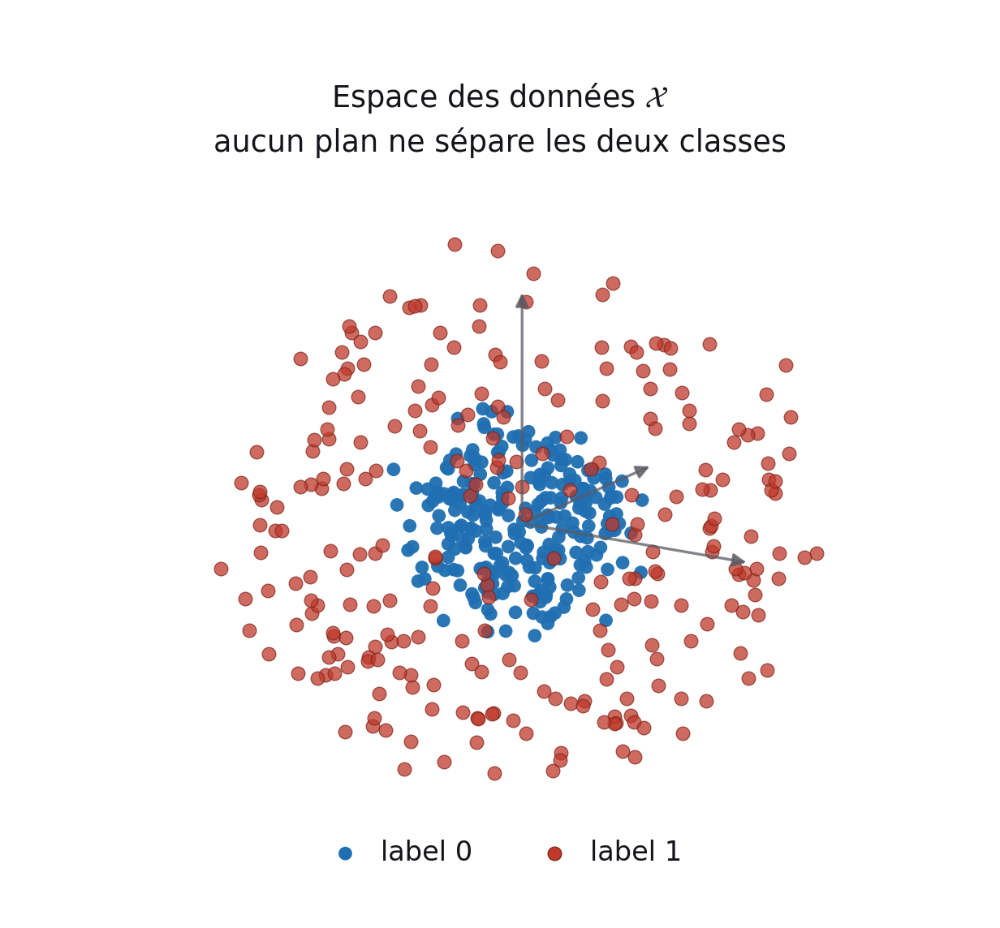
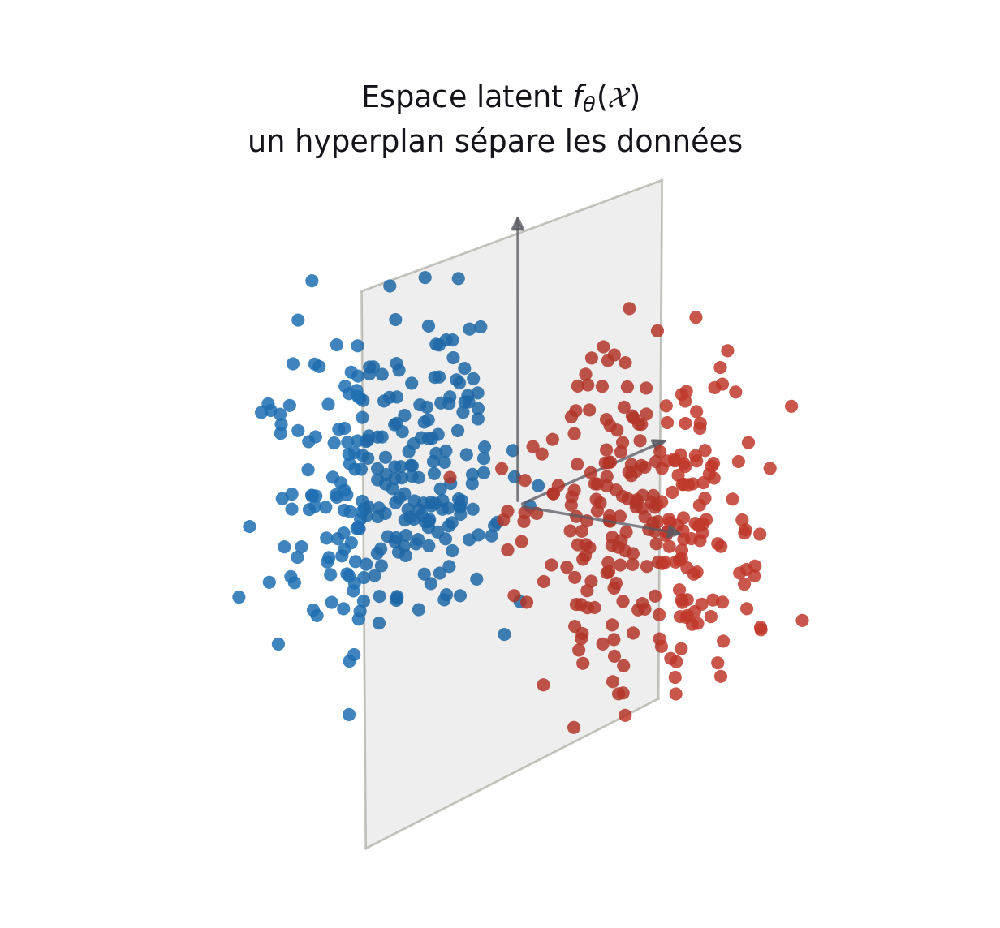
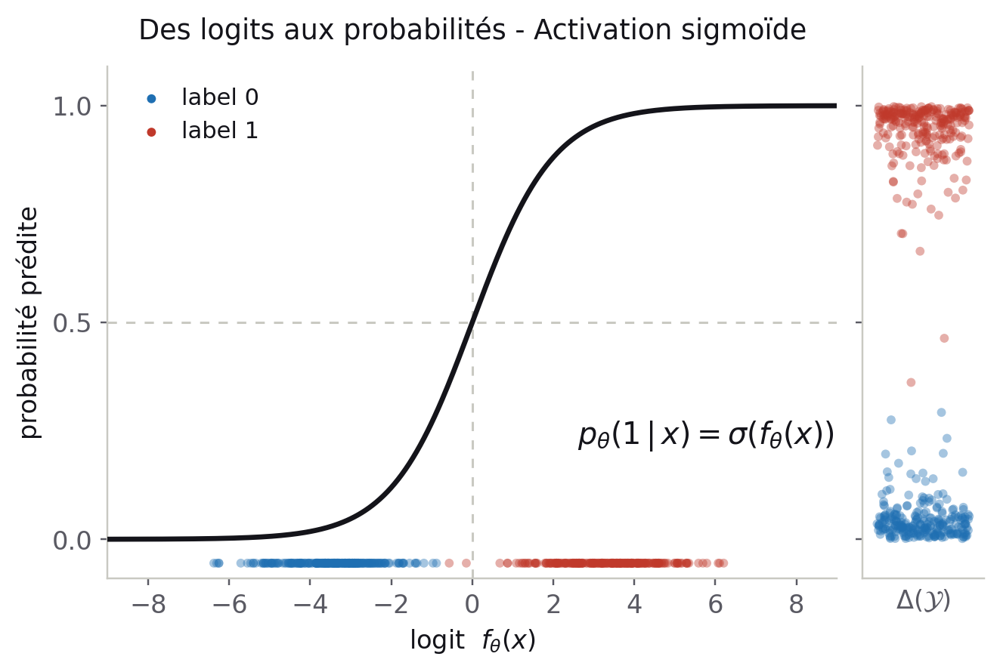
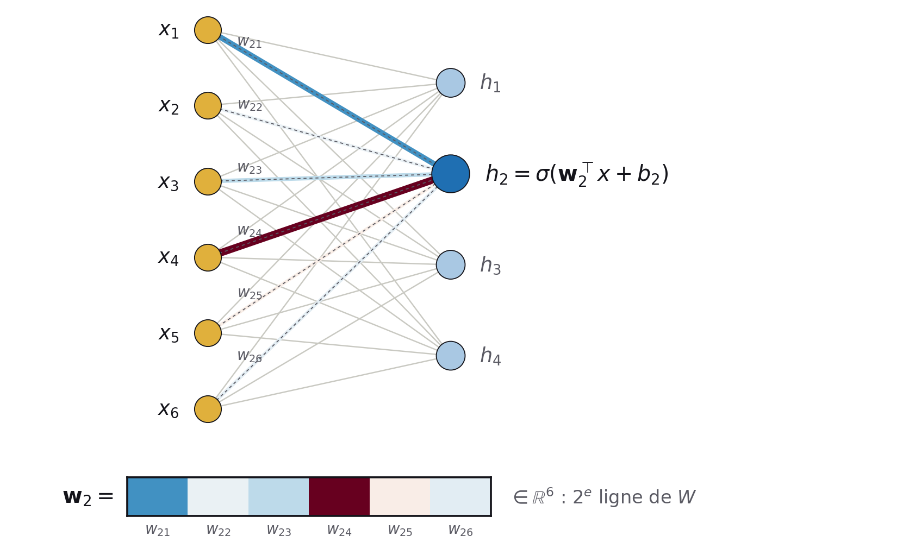
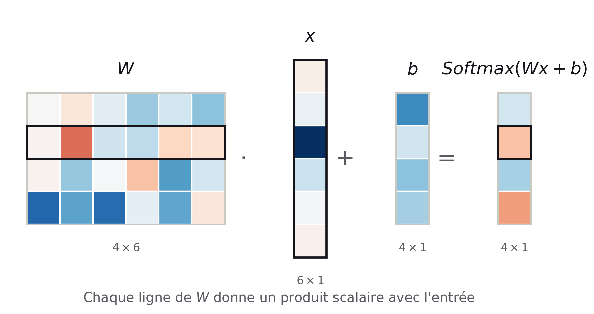
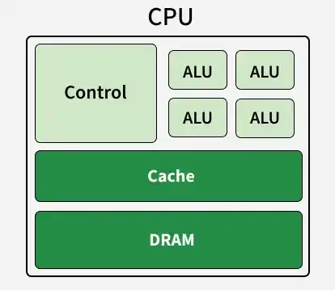
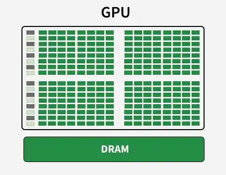
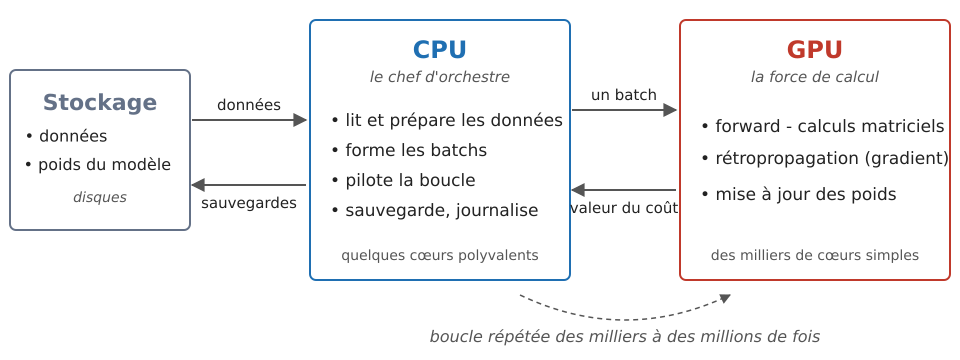
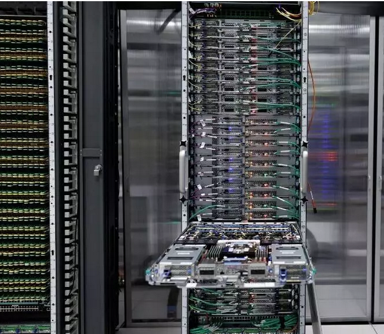

Centre de calculs et modèles d'IA
Ivanhoé Botcazou
Doctorant en intelligence artificielle au LERIA
22 Octobre 2026
Au programme
Séminaire de Dartmouth 1956
La naissance de la discipline : Intelligence Artificielle
Au second rang, de gauche à droite : Oliver Selfridge, Nathaniel Rochester, Marvin Minsky, John McCarthy.
Au premier rang : Ray Solomonoff, Peter Milner, Claude Shannon.
Photo : Nathaniel Rochester — The Minsky Family
« Quels problèmes de niveau humain un algorithme serait-il capable de résoudre ? »
- Objectif : Simuler l'intelligence humaine.
- Vision : Reconnaissance d'images.
- Langage : Génération automatique de texte.
- Modèles : Réseaux de neurones artificiels.
1. IA : modélisation - apprentissage - prédiction
Schéma pour les modèles d'IA paramétriques
Prédire un vecteur $f_\theta(X)$ dans un espace normé $(F, \|\cdot\|)$.
Ex : prédire le prix $P$ de vente d'un bien immobilier en fonction de caractéristiques $C$.
Modélisation : une fonction à valeurs réelles $f_{\theta}(C) = \hat{P} \approx P$Coût : les moindres carrés $\|P - f_\theta(C)\|_2^2$
Prédire une loi de probabilité $p_\theta(\cdot\,|\,X)$ sur l'espace des classes $(\mathcal{Y}, \mathcal{A})$
Ex : prédire si un tweet $T$ comporte des propos haineux $H$.
Modélisation : cas binaire $\mathcal{H}=\{0,1\}$, $\;p_\theta(\cdot\,|\,T) = \sigma(f_\theta(T)) \in \Delta(\mathcal{H})$Coût : l'entropie croisée $-\log p_\theta(H\,|\,T) = KL\big(\delta_H \,\|\, p_\theta(\cdot\,|\,T)\big)$
Visualiser un modèle de classification

Les deux classes sont imbriquées, aucune frontière linéaire ne les sépare.
Visualiser un modèle de classification

$f_\theta$ change la géométrie des données en les transportant vers une nouvelle représentation.
Visualiser un modèle de classification

$\sigma$ est une fonction d'activation pour obtenir une mesure de probabilité $p_\theta(\cdot\,|\,X) \in \Delta(\mathcal{Y})$.
Réseaux de neurones & Algèbre linéaire

Schéma d'un réseau de neurones artificiels à une couche
Interprétation matricielle d'une couche :

- Transformations affines : $W \cdot X + b$
- Fonctions d'activation non linéaires
- Changements de repère et transformation de la géométrie
Théorème d'approximation universelle
Théorème (Pinkus, 1999). Soit \(\sigma \in \mathcal{C}(\mathbb{R}, \mathbb{R})\). \(\sigma\) n'est pas polynomiale si et seulement si :
\[ \begin{aligned} &\forall K \subset \mathbb{R}^n \text{ compact},\ \forall f \in \mathcal{C}(K, \mathbb{R}^m),\ \forall \varepsilon > 0,\ \exists\, k \in \mathbb{N},\\ &A \in \mathbb{R}^{k \times n},\ b \in \mathbb{R}^{k},\ C \in \mathbb{R}^{m \times k} \ \text{ tels que } \ \sup_{X \in K} \big\| f(X) - C\,\sigma(AX + b) \big\| < \varepsilon . \end{aligned} \]Pour \(z = (z_1, \dots, z_k) \in \mathbb{R}^k\), \(\sigma(z) = \big(\sigma(z_1), \dots, \sigma(z_k)\big)\) : \(\sigma\) est appliquée à chacune des composantes.
Exemple : \(n = m = 1\), \(K = [0, 1]\), \(\sigma\) sigmoïde.
![Un neurone est une marche ; une somme de k neurones approche f sur [0,1]](assets/img/05_approximation_universelle.png?v=2)
Cybenko (1989) · Hornik (1989) · Pinkus (1999)
Résultat d'existence : rien sur la taille \(k\) ni sur la valeurs des poids.
Initialisation & Fonction de coût
Choix empirique d'une architecture neuronale et poids tirés au hasard, ni trop grands ni trop petits.
Xavier (Glorot) — tanh, sigmoïde
\[ \theta \sim \mathcal{U}\big([-x,\, x]\big), \quad x = \sqrt{\frac{6}{n_{\text{in}} + n_{\text{out}}}} \]Kaiming (He) — ReLU
\[ \theta \sim \mathcal{N}\!\left(0,\, \frac{2}{n_{\text{in}}}\right) \]\(n_{\text{in}}, n_{\text{out}}\) : nombre de neurones en entrée / en sortie de la couche
Minimiser un coût moyen par batch aléatoire d'exemples \(B\) : \[ \mathcal{L}_B(\theta) = \frac{1}{|B|} \sum_{i \in B} \ell\big(f_\theta(X_i),\, Y_i\big) \]
Objectif : \(\theta^\star \in \arg\min_\theta \mathcal{L}(\theta)\)
Optimisation par descente de gradient stochastique
Le big data pour recouvrir l'espace
Pour apprendre $f$, il faut suffisamment d'exemples $(X_i, Y_i)$ qui recouvrent l'espace.
Or le pavage uniforme de l'hypercubde de dimension $d$ avec un pas $\delta$ demande $(2/\delta + 1)^d$ points.
La malédiction de la dimension
- Le volume part dans les coins : les observations sont plus isolées.
- En pratique, les données réelles ne sont pas réparties uniformément, elles se concentrent près d'une variété de petite dimension. C'est ce qui rend l'apprentissage possible, à condition de disposer d'un volume de données significatif.
En résumé : l'IA par apprentissage automatique
Sur quelles machines entraîner ces modèles ?
2. Ressources de calcul et de stockage
Puissance de calcul : CPU et GPU

- Cœurs puissants et polyvalents (de 8 à 128)
- Enchaîne très vite différentes tâches - Séquenciel

- Des milliers de cœurs simples (6 912 sur un A100)
- Fait beaucoup d'opérations simples - Parallèlise
Images : GeeksforGeeks, « Difference between CPU and GPU »
Un entraînement en binôme

GLiCID : HPC des Pays de la Loire

Centre de calcul mutualisé des universités d'Angers, Nantes, Le Mans et de Centrale Nantes.
| Cluster | CPU (AMD EPYC) | GPU (NVIDIA) |
|---|---|---|
| Nautilus (2023) | 5 376 cœurs | 16 A100 · 8 A40 |
| Aouda (nov. 2026) | 10 240 cœurs | 24 H200 |
| Total GLiCID | > 19 500 cœurs | 85 GPU |
- Stockage : 30 Go par personne en
/home, 713 To partagés pour les calculs
Sources : glicid.fr, doc.glicid.fr
3. Cas particulier : les modèles de langues
Merci
Questions ?